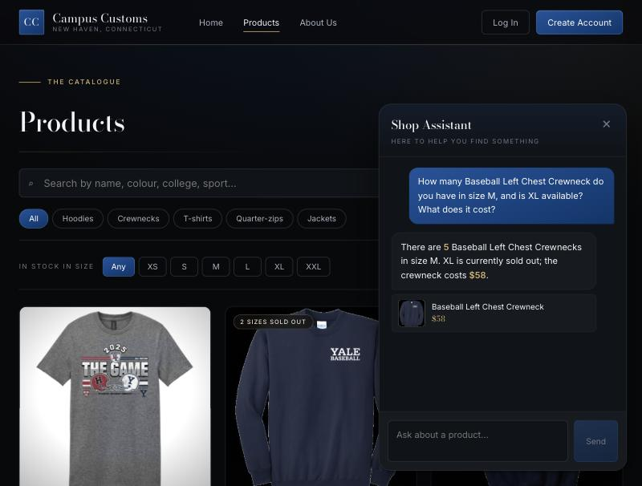
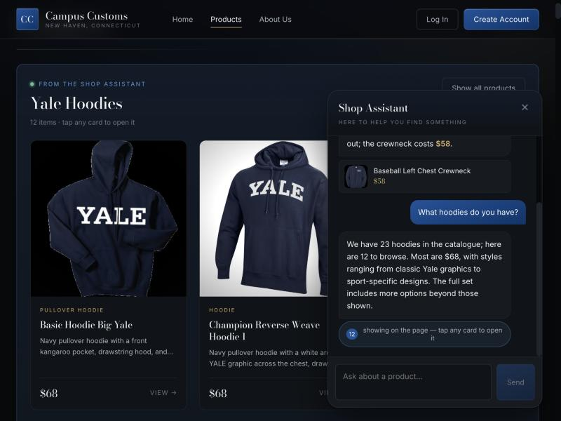
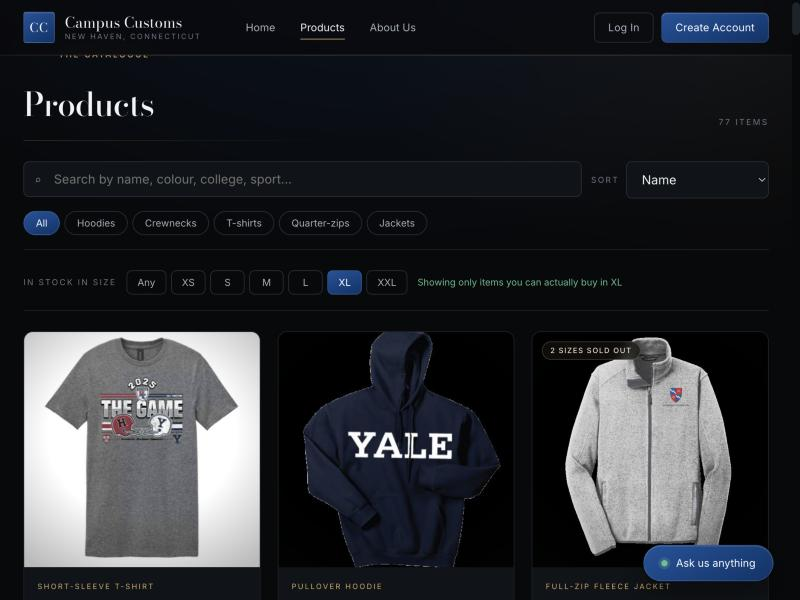
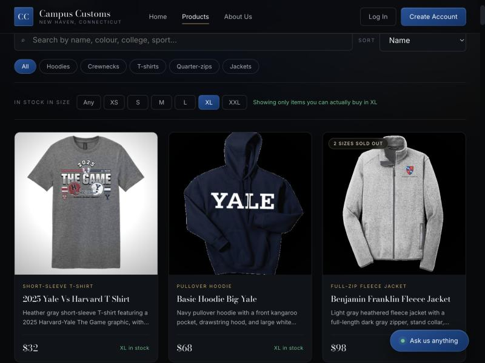

Homework 4 · Problem 11
Three checks run against the running application: the React front end on
localhost:5173 talking to the FastAPI backend and PydanticAI agent on
127.0.0.1:8000, reading the real campus_customs.db.
Every screenshot below was taken from that live session. Where the agent states a
number, the same number is queried straight from the database and shown next to it.
The test product was chosen deliberately: it has an awkward, specific quantity in one size and is completely sold out in another. A model inventing an answer would not land on these numbers.
| Claim | Agent said | Database says | Match |
|---|---|---|---|
| Quantity in M | 5 | 5 | yes |
| XL availability | sold out | XL = 0 | yes |
| Price | $58 | 58.0 | yes |
$ sqlite3 data/campus_customs.db "SELECT size, quantity FROM inventory
WHERE product_id='baseball-left-chest-crewneck';"
XS|0 S|15 M|5 L|25 XL|0 XXL|25
$ sqlite3 data/campus_customs.db "SELECT price FROM catalogue
WHERE product_id='baseball-left-chest-crewneck';"
58.0

Proves the agent's stock and price claims come from the database. The specific value "5" and the zero-stock XL are the evidence: both are correct, and neither is a number a guessing model would produce.
Asking about a category in the chat does not just return text — the agent returns product ids, the server turns them into real cards, and the shop page updates underneath the conversation.

Proves the chat drives the page. The cards are hydrated by the server from the ids the agent returned, so any product the agent invented is dropped before a shopper ever sees it.
A quarter of the size rows in this catalogue are sold out (145 of 612). Before this feature, the only way to find that out was to open a product and discover your size struck through. The size filter answers it at the grid level.

/products?size=XL, so the view is shareable and the
browser's Back button returns to it.

$ sqlite3 data/campus_customs.db "SELECT COUNT(DISTINCT product_id) FROM inventory
WHERE size='XL' AND quantity > 0;"
77 <-- the page showed 77 items
Proves the filter is backed by real inventory, not a cosmetic control: the 77 products shown are exactly the 77 the database reports as having XL in stock.